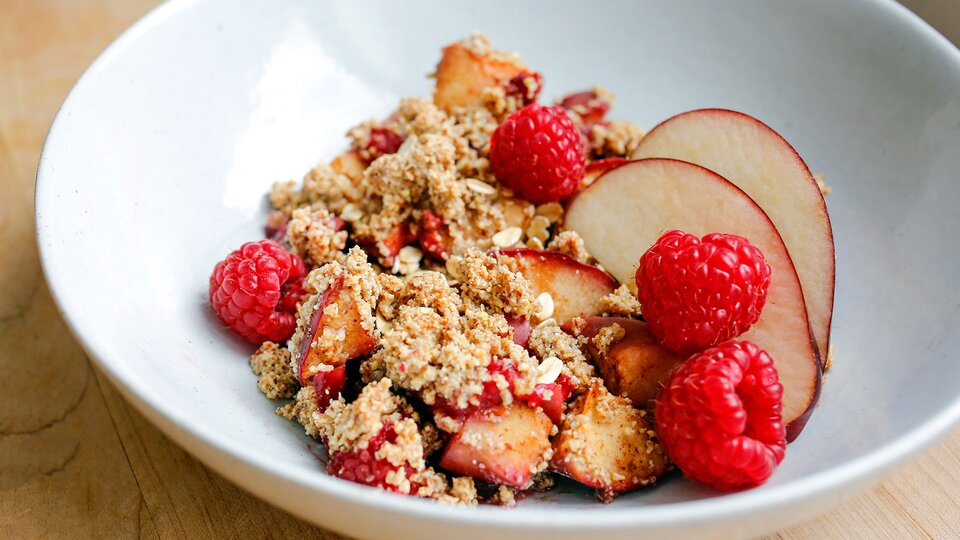

Quinoa Apple-Raspberry Crumble

Description
This healthy crumble recipe is free from the eight primary allergens
and is a health-conscious treat fit for any diet plan. Once again, quinoa provides a complete source of protein in this dish, even in the form of dessert.
and is a health-conscious treat fit for any diet plan. Once again, quinoa provides a complete source of protein in this dish, even in the form of dessert.
Ingredients
- 2 red delicious apples, chopped
- 2 cup raspberries
- 2 tbsp coconut sugar
- 1 tbsp cinnamon
- ¼ cup extra virgin coconut oil
- 1 tsp cornstarch
- ¼ cup ground oats
- ¾ cup quinoa flakes
- 2 tsp lemon juice
- 1 pinch table salt
Directions
- Heat the oven to 350 degrees F.
- In a large bowl, combine the apples, cornstarch, lemon juice, 1 tablespoon of coconut sugar, and half of the cinnamon. Once thoroughly mixed, add in the raspberries and mix gently as to not lose the shape of the berry. Set aside.
- Place the quinoa flakes and oats in a Magic Bullet or other blender that can produce a fine grind. Pulse blend grains a few times.
- Add a pinch of salt and the remaining coconut sugar and cinnamon to the grain mixture and blend again.
- Drizzle melted coconut oil into the dry mixture and pulse again to form a crumbly mixture.
- Transfer the apple and raspberry mixture to a baking dish and top with the crumble mixture.
- Cover the crumble with foil and bake for 25 minutes. Remove foil and bake for 10 more minutes.
- Let crumble stand for 10 minutes before slicing and serving. Garnish with fresh raspberries.